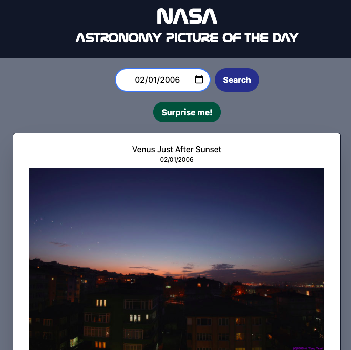

Read about me
I'm a web developer in central PA specializing in hand-coded HTML, CSS, and JavaScript. I work primarily with client-side optimization, making sure your site looks great in every browser and runs well on every device.
Whether you're building an Angular app or updating a ten year old CRM system, I can get you where you need to be. There's always a way to make things work, and I can help you find the cleanest, most efficient way to do it.

Play with my demos
APOD Engine (Live Demo)
A single page application that allows you to search for the official NASA Astronomy Picture of the Day for any date.
I'm a space nerd at heart, so this was an interesting project that I actually return to and use from time to time, just for fun. It also features a pure CSS/JS starfield background that's lightweight and modular (which was a fun little project in itself).
The Bachelor Cookbook (Live Demo)
A single page application that feeds (yep) off of the open-source Recipe Puppy API, which is admittedly not quite robust enough to use for a production app but works fine for demo purposes.

What began as an experiment with minimalist API queries ended up as a recipe search engine for poor, lonely men. The idea is to search for recipes that only require the ingredients you have on hand, plus or minus an ingredient or two. Believe it or not, "Water" and "Bread" do return results.
SpaceTrade (Live Demo)
A small JavaScript game similar to Dope Wars and other resource management games, but also includes a randomized encounter system, a Choose-Your-Own-Adventure mechanic, and some experimental UI elements. This also features the pure CSS/JS starfield background that's part of the APOD Engine demo, above.

It was a refreshing change to develop this, and I learned (and re-learned) a lot about object/variable manipulation in the process, as well as organizational best practices. I update this from time to time but it will most likely live as a perpetual coding sandbox / work in progress. I keep some of the newest additions on an experimental branch hidden over here because some features haven't been cross-browser tested or optimized for mobile use, but feel free to play around with it.